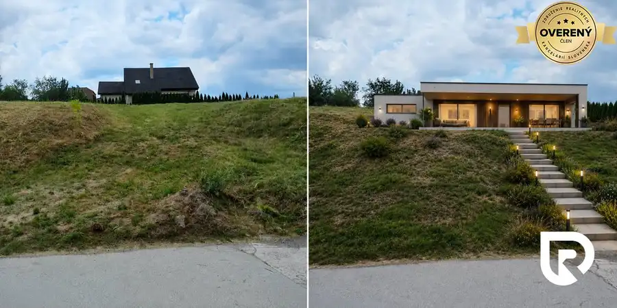
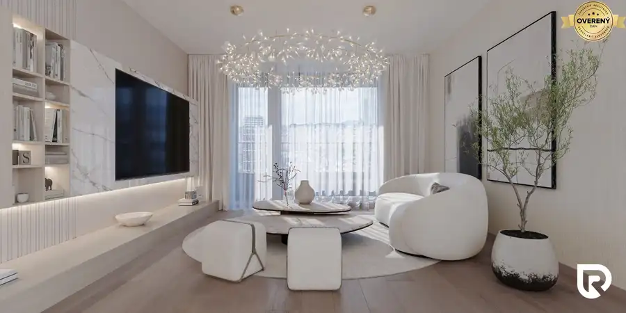
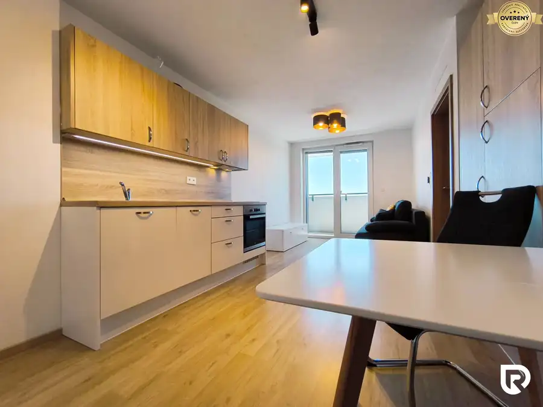

1i byt | centrum | Prievozská | Ružinov
Ružinov, Bratislava
- Dispozícia1-izbový
- Plocha40 m²
- Poschodie1. z 4
- Stavúplne prerobený
O nehnuteľnosti
Petra z RentHub Vám ponúka na prenájom
priestranný 1-izbový byt
s výmerou 40 m² na Prievozskej 15 v Bratislave – Ružinove. Byt je
kompletne zariadený
a svojou dispozíciou je vhodný najmä pre jednotlivca alebo pár, ktorý hľadá
pohodlné bývanie
s dostatkom úložného priestoru.
Byt sa nachádza na 1. poschodí zo 4 v bytovom dome bez výťahu.
Hlavné benefity bytu
Obývacia a spacia časť tvoria
jeden veľkorysý priestor
, ktorý je možné prakticky oddeliť
posuvnou priečkou
. K dispozícii je manželská posteľ, rohová sedačka, konferenčný stolík a množstvo úložného priestoru vďaka
veľkým vstavaným skriniam.
Kuchyňa je samostatne riešená a vybavená kuchynskou linkou so vstavanými spotrebičmi, vrátane rúry umývačky riadu a mikrovlnnej rúry. Praktický
barový pult s posedením
môže poslúžiť na stolovanie aj ako pracovné miesto.
Kúpeľňa je vybavená sprchovacím kútom a WC. Počas letných mesiacov komfort zvýši mobilná klimatizácia.
Výhodou je tiež dostupné
optické internetové pripojenie.
Lokalita
Prievozská ulica, Bratislava – Ružinov ponúka dobrú
dostupnosť do širšieho centra
mesta a praktické
spojenie s ostatnými časťami Bratislavy
. V blízkosti zastávka MHD linky č. 42, 70, 72.
Lokalita
je vhodná pre človeka, ktorý chce mať každodenné
mestské služby a dopravu na dosah.
V pešej dostupnosti Apollo biznis centrum, Pressburg Tower, nákupné centrum Nivy, reštaurácie, kaviarne.
Byt nemá balkón ani vlastné parkovacie miesto.
A navyše – vďaka RentHub sa môžete spoľahnúť, že o vás bude vždy postarané. Sme tu pre vás, ak niečo potrebujete.
Cena nájmu aj s energiami 700€.
Platí sa depozit vo výške 700€, plus provízia pre RK 700€.
Byt je vhodný pre jednotlivca, prípadne dve osoby.
Voľný po dohode.
Ak vás táto ponuka zaujala, neváhajte a dohodnite si obhliadku ešte dnes.
Zodpovedný maklér:
Petra Baloghová
RentHub s.r.o. špecialisti na prenájmy
Tel.:
E-mail:
RADO Reality Group je ocenená Realitnou úniou ako najlepšia realitná kancelária na Slovensku za roky 2022 a 2023. Okrem iného sme držiteľmi ďalších 6 prestížnych ocenení.
Uvedená cena je konečná, pokiaľ sa zmluvné strany nedohodnú inak a nenavyšuje sa o odmenu sprostredkovateľa, v cene je zahrnuté právne poradenstvo, vyhotovenie nájomných zmlúv.
Text inzerátu a fotografie sú autorským dielom spoločností Ideálny nájomca by Renthub s.r.o. a RADO Reality Group s.r.o. a bez ich súhlasu ich nie je možné kopírovať.
Parametre
| Celková rozloha | 40 m² |
|---|---|
| Úžitková plocha | 40 m² |
| Poschodie | 1/vyššie poschodie |
| Počet poschodí | 4 |
| Počet izieb | 1 |
| Stav | úplne prerobený |
| Plyn | áno |
| Internet | optika |
| Kúpeľňa | sprchovací kút |
| Balkón | nie |
| Lódžia | nie |
| Terasa | nie |
| Pivnica | nie |
| Garáž | nie |
| Výťah | nie |
| Parkovanie | nie |
| Postavené z | tehla |
| Zariadenie | zariadený |
| Zateplený objekt | áno |
| Klimatizácia | nie |
| Káblová televízia | nie |
| Energetický certifikát | áno |
| Predzáhradka | nie |
| Bezbariérový prístup | nie |
| Dátum zverejnenia | 11. 8. 2026 |
Kde to je
Mohlo by Vás zaujímať

Pozemok5 66 800 €Na predaj stavebný pozemok v obci Bidovce Okolie, Bidovce 543 m² Ponúkam na predaj stavebný pozemok v pokojnej a vyhľadávanej lokalite obce Bidovce, len pár minút od Košíc. Pozemok je vhodný na výstavbu rodinného…
Byt7 363 000 €DownTown Yards - 2i byt | TOP ponuka v projekte | 11.poschodie Ružinov, Bratislava 2-izbový51.73 m²11. podlažie Ponúkam na predaj moderný 2-izbový byt v prémiovom projekte DownTown Yards, situovanom v širšom centre Bratislavy. Atraktívna cena bytu 363 000€…
Byt10 Cena dohodou| Moderný 2i byt | loggia | parkovanie | Matador Petržalka, Bratislava 2-izbový37 m²19. podlažie Slavo z RentHub Vám ponúka na prenájom zariadený 2-izbový byt v projekte Matadorka na ulici Závodu Matador v Bratislave – Petržalke. Byt je vhodný…